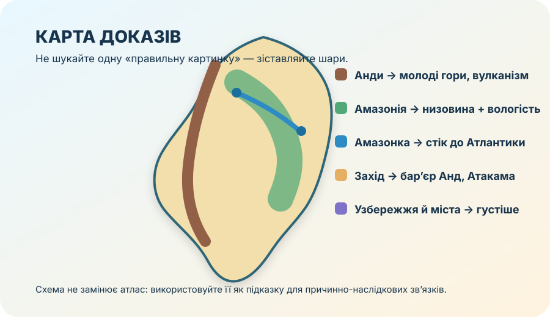

1. Ідентифікація учня
Робота заблокована до заповнення всіх трьох полів.
2. Карта доказів

Порада: якщо сумніваєтесь, не вгадуйте. Знайдіть просторовий доказ: де лежить об’єкт, що його оточує, куди спрямований стік, де проходять гори, як змінюються природні комплекси.
3. Результат і маршрут корекції
0/10
ГР1 — карта й просторові зв’язки
ГР2 — природні закономірності
ГР3 — людина, довкілля, аргументація